원격 스마트 주차 보조 이상 및 제한 사항
기능 점검
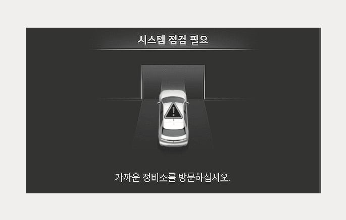
2C_CheckRSPAInfo
원격 스마트 주차 보조에 이상이 있으면 인포테인먼트 시스템 화면에 경고문이 표시됩니다. 원격 스마트 주차 보조를 사용하지 마시고, 당사 직영 하이테크센터나 블루핸즈에서 점검을 받으십시오.
기능 해제
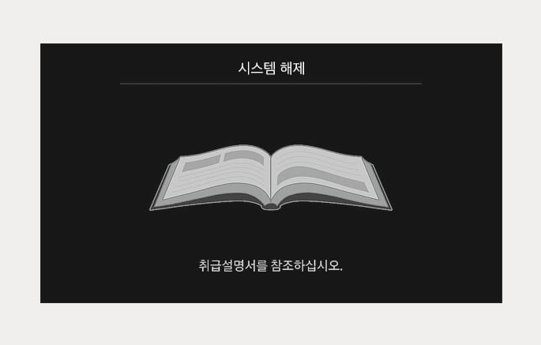
2C_CheckRSPACancelledInfo
원격 스마트 주차 보조 작동 중 안내 순서에 상관없이 기능을 해제할 수 있으며, 상황에 따라 다른 안내문이 표시됩니다. 안내에 따라 차량이나 기능을 조작하십시오. 안전과 관련된 사항은 항상 주의를 기울여 조작하십시오.
기능 작동 대기
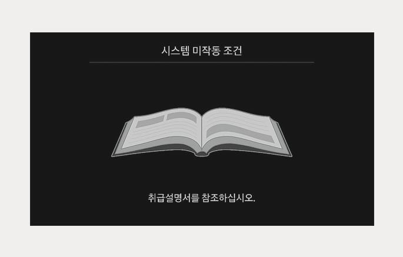
2C_CheckRSPAStandbyInfo
다음과 같은 상황에서 미작동 안내문이 표시됩니다.
-
원격 스마트 주차 보조가 작동 준비 중일 때 주차/뷰 (
ā ) 버튼을 길게 누르면 안내문이 표시됩니다. 잠시 기다린 후 다시 주차/뷰 (ā ) 버튼을 길게 누르면 작동됩니다. -
스마트 키의 배터리가 부족하면 안내문이 표시됩니다. 스마트 키 상태를 확인하십시오.
-
EV 모드가 유틸리티 모드일 때에도 안내문이 표시됩니다. 자세한 내용은 퀵 가이드 '유틸리티 모드'를 참고하십시오.
원격 스마트 주차 보조는 다음의 센서를 사용합니다.
-
광각-전방 카메라
-
광각-좌/우측방 카메라(사이드 미러 하단)
-
광각-후방 카메라
-
전방 초음파 센서
-
전측방 초음파 센서
-
후방 초음파 센서
-
후측방 초음파 센서
인식 센서에 관한 자세한 내용은 '인식 센서 및 제한 사항'을 참고하십시오.
인식 센서가 주변 상황을 인식하기 어려운 상황에서는 원격 스마트 주차 보조가 정상적으로 작동하지 않을 수 있습니다.
다음과 같은 경우에는 원격 스마트 주차 보조의 성능이 저하되거나 충돌 위험이 있을 수 있습니다. 필요에 따라 직접 주차 또는 출차하십시오.
-
스티어링 휠에 액세서리를 붙인 경우
-
스노우체인이나 스페어타이어 또는 규격이 다른 휠을 장착한 경우
-
타이어 공기압이 기준보다 낮거나 높은 경우
-
차량보다 길거나 넓은 짐을 적재하거나, 트레일러를 연결한 경우
-
휠 얼라인먼트가 틀어진 경우
-
차량이 한쪽으로 심하게 기운 경우
-
차량에 트레일러 히치가 장착된 경우
-
번호판을 정규 위치와 다른 곳에 장착한 경우
-
원격 스마트 주차 보조가 작동할 때 초음파센서 장착 위치보다 위 또는 아래에 사람, 동물 또는 물체가 있는 경우
-
주차 공간이 좁은 경우
-
주차 공간에 사람, 동물 또는 물체(자전거/오토바이/쇼핑 카트/쓰레기통/작은 기둥 등)가 있는 경우
-
주차 공간 주변에 기둥이 있거나 기둥 주변에 소화전 등 구조물이 있는 경우
-
노면이 평평하지 않은 경우(연석, 과속방지턱, 둔덕 등)
-
노면이 미끄러운 경우
-
트럭 등 적재함의 높이가 높거나 큰 차량 주변에 있는 주차 공간인 경우
-
주차 공간이 경사로인 경우
-
주차선이 있는 주차 공간 내부에 눈, 물웅덩이로 인해 노면이 젖어 있거나 노면 마커가 있는 경우
-
주차선이 있는 주차 공간 주변에 도로 균열로 인해 노면이 울퉁불퉁한 경우
-
주차선이 너무 얇거나 두꺼운 경우
-
주차선이 일부 지워지거나 흐린 경우
-
주차선이 사람이나 동물 또는 눈, 박스 등과 같은 물체로 가려진 경우
-
강풍이 부는 경우
-
요철길, 자갈길, 언덕길, 풀숲 등에서 작동하는 경우
-
브레이크 디스크. 캘리퍼 등 구동 장치 구성 부품을 개조한 경우
-
공식 규격 외 번호판을 장착한 경우
다음과 같은 조건에서 원격 스마트 주차 보조가 정상적으로 작동하지 않을 수 있으므로 운전자는 주의하십시오.
-
경사로
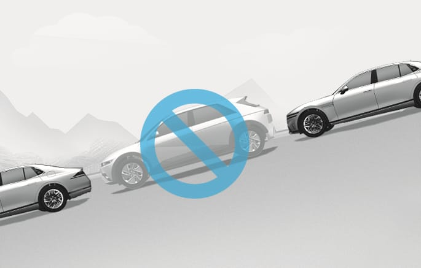
2C_RSPAParkingInclineInfo
경사로는 운전자가 수동으로 주차 또는 출차하십시오.
-
미끄럽거나 평평하지 않은 곳
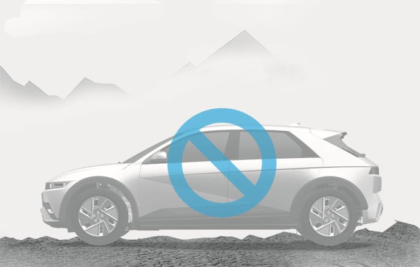
2C_RSPAParkingUnevenRoadInfo
차량이 미끄러지거나 자갈 등 노면 상태에 따라 차량 이동이 불가능할 경우 원격 스마트 주차 보조가 해제됩니다.
-
트럭 주변
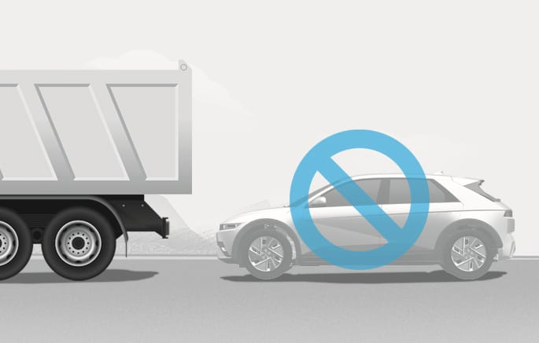
2C_RSPAParkingBehindTruckInfo
트럭 등 적재함 높이가 높은 대형 차량 주변에서 원격 스마트 주차 보조를 사용하면 접촉 사고가 발생할 수 있습니다. 원격 스마트 주차 보조를 사용하지 말고 직접 주차 또는 출차하십시오.
-
원형, 사각 및 작은 기둥 주변
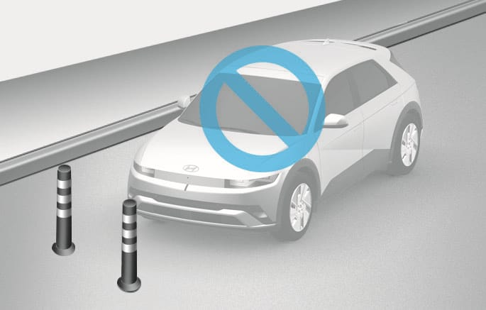
2C_RSPAParkingNearPillarInfo
초음파센서는 폭이 좁은 장애물, 원형 기둥, 작은 기둥, 사각 기둥 모서리 또는 기둥 주변 구조물(소화전 등)을 인식하지 못할 수 있으며, 이로 인해 충돌이 발생할 수 있습니다. 운전자가 수동으로 주차 또는 출차하십시오.
-
정렬이 맞지 않는 차량 옆
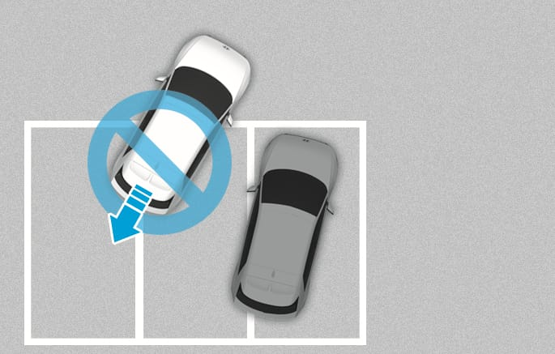
2C_RSPAParkingWithSideVehicleInfo
옆 차량의 정렬이 맞지 않는 주차 공간에서 원격 스마트 주차 보조를 작동하면 다른 차량을 피하지만 나란히 주차하지 않을 수 있습니다.
단, 주차선이 존재하고 정상적으로 인식된 경우에는 주차선에 맞춰 나란히 주차합니다.
-
좁은 공간 주차 조건
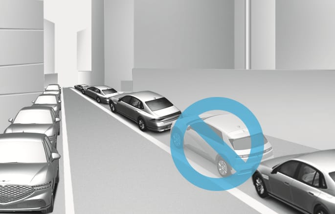
2C_ParkNearWall
주차에 필요한 최소 공간(차량 회전 반경)보다 좁은 도로(주택가 양방향 주차 환경, 이중 주차 환경 등)에서는 안전을 위해 공간 탐색을 하지 않습니다.
협소한 주차 환경에서는 운전자가 직접 주변 사람, 동물 또는 물체를 확인하여 주차하십시오.
-
벽 근접 출차 조건
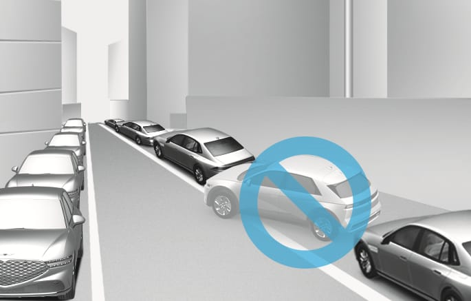
2C_ExitNearWall
차량이 벽이나 도로턱에 근접하여 협소한 공간에 주차된 경우 원격 스마트 주차 보조가 정상적으로 작동하지 않을 수 있습니다. 운전자가 직접 주변 사람, 동물 또는 물체를 확인하여 출차하십시오.
-
비정형적 주차 조건
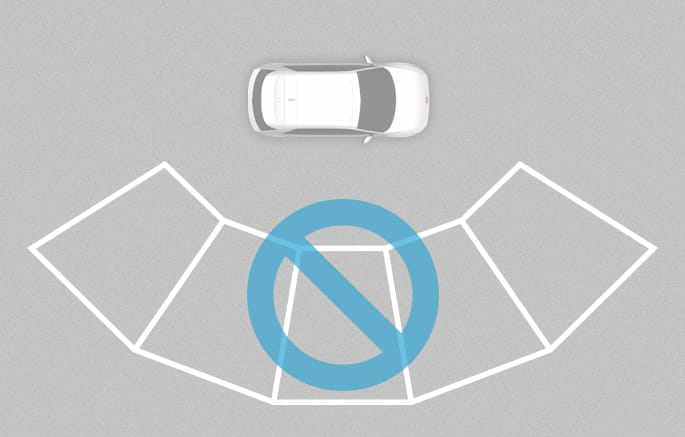
2C_AbnormalParkingSpace
원격 스마트 주차 보조는 주차선이 평행하지 않은 장소에서 정상적으로 작동하지 않습니다. 주차 공간이 인식되더라도 사용하지 마십시오.
-
경사진 공간 주차 조건
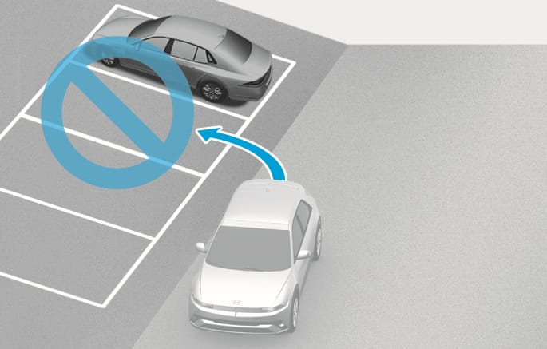
2C_InclinedParkingSpace
경사지거나 굴곡진 노면에서는 주차선이 있어도 원격 스마트 주차 보조가 정상적으로 작동하지 않습니다. 주차 공간이 인식되더라도 사용하지 마십시오.
-
사선 주차 공간
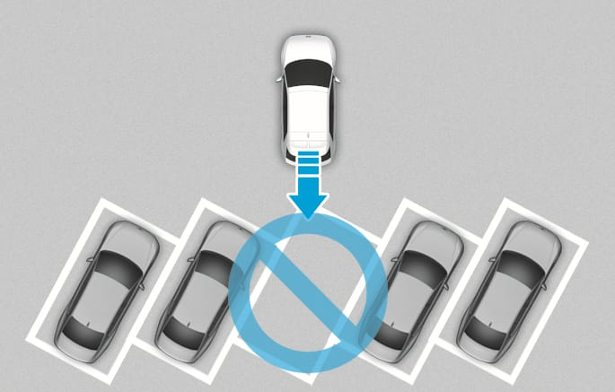
2C_RSPAParkingDiagonalInfo
사선 주차 공간에서는 원격 전/후진 기능이 정상적으로 작동하지 않을 수 있습니다.
-
환경 조건
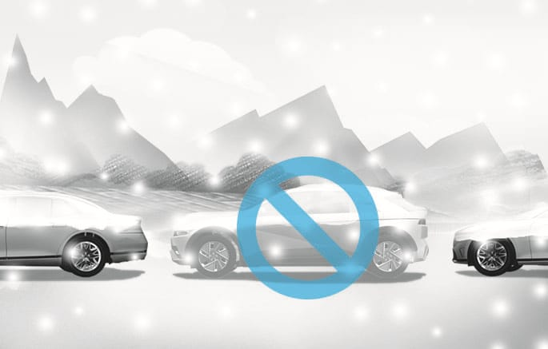
2C_RSPAParkingInSnowInfo
적설 지역 등 초음파센서 및 광각 카메라 가림이 발생할 수 있는 환경에서는 감지 성능이 저하될 수 있습니다. 또한 공간탐색 또는 주차 중 차량 미끄러짐이 발생할 경우 원격 스마트 주차 보조가 해제될 수 있습니다.
-
안전한 주차 및 출차에 대한 책임은 운전자에게 있습니다. 차량 주변에 사람, 동물 또는 물체가 없는지 확인하면서 원격 스마트 주차 보조를 사용하십시오.
-
안전을 위해 차량 진행 방향 밖에서 조작하십시오.
-
사람, 동물 또는 물체가 센서의 사각지대에 있거나 가까이 있을 경우 충돌할 수 있으므로 주의하십시오.
-
사람, 동물 또는 물체가 갑자기 나타나는 경우 충돌할 수 있으므로 주의하십시오.
-
음주한 상태에서 원격 스마트 주차 보조를 사용하지 마십시오.
-
운전자 외 다른 사람, 특히 어린이가 스마트 키를 사용하지 않도록 주의하십시오.
-
원격 스마트 주차 보조를 장시간 연속으로 사용하는 경우 성능이 저하될 수 있습니다.
-
차량 쏠림이 발생한 경우(휠 얼라이먼트 조정이 필요한)에는 원격 스마트 주차 보조가 정상적으로 작동하지 않습니다.
당사 직영 하이테크센터나 블루핸즈에서 점검을 받으십시오.
-
원격 스마트 주차 보조 또는 운전자 조작에 의해 제동할 경우 브레이크 작동음이 발생할 수 있습니다.
-
원격 스마트 주차 보조는 사람, 동물 또는 물체와의 충돌 방지를 위해 급제동을 할 수 있습니다.
-
차량이 안전하게 움직일 수 있는 정도로 충분히 넓은 주차 공간에서만 사용하십시오.
-
원격 스마트 주차 보조가 정상적으로 작동하지 않으면 당사 직영 하이테크센터나 블루핸즈에서 점검을 받으십시오.
-
테일게이트가 열린 상태에서의 주행은 비정상 운행이므로 안전에 주의하십시오.
-
원격 스마트 주차 보조 작동 중 주차 거리 경고의 3차 경고음(연속음)이 울리면 사람, 동물 또는 물체가 차량과 가까이 있음을 의미합니다. 이때 원격 스마트 주차 보조는 일시 중지됩니다. 주변에 사람, 동물 또는 물체가 있는지 직접 확인하십시오.
-
제동 상태에 따라 차량이 제동등이 켜진 상태로 이동할 수 있습니다.
-
추운 곳에서 장시간 주차 또는 정차한 후 시동을 걸면 원격 스마트 주차 보조의 성능이 일시 저하되거나 기능이 해제될 수 있습니다.